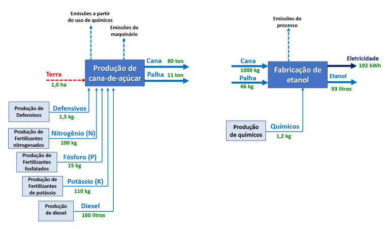
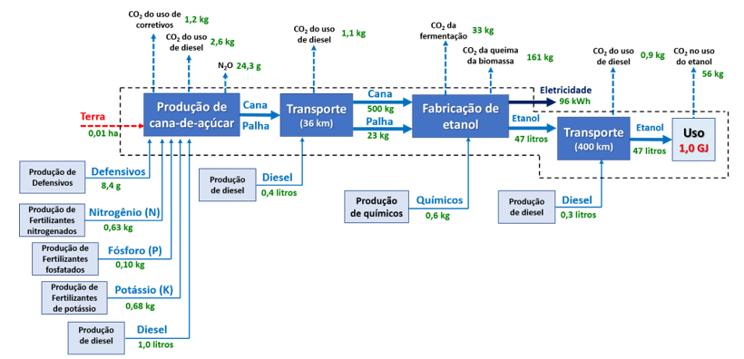
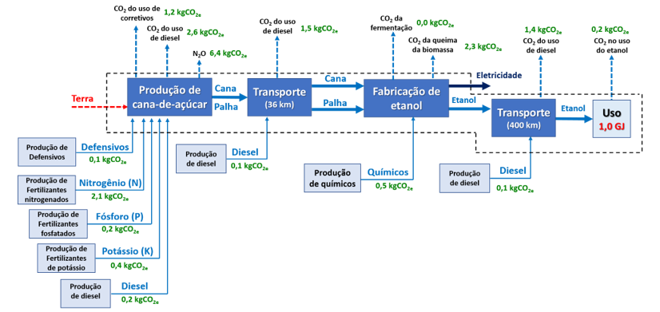
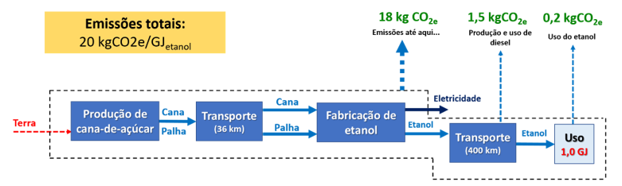
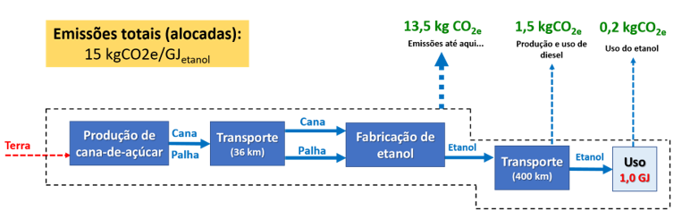
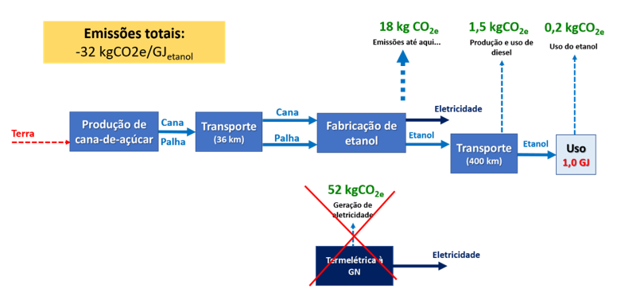
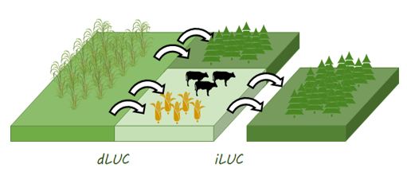

CAPÍTULO 5 ESTIMATIVA DA INTENSIDADE DE CARBONO NO CONTEXTO DE SISTEMAS ENERGÉTICOS
5.1 Aplicação Genérica na Produção e Uso de Biocombustível
A ACV é, fundamentalmente, uma análise comparativa. Ou seja, ela visa dar subsídios para uma tomada de decisão quando são comparados, no mínimo, dois cenários distintos.
Conforme visto até aqui, a transição energética e a descarbonização estão entre as principais motivações deste curso. Assim, a produção de uso de energia de baixo carbono pode ajudar alcançar estes ambiciosos objetivos. Neste contexto, encontra-se o uso de hidrogênio e de biocombustíveis em substituição a combustíveis fósseis.
Para exemplificar as etapas de uma ACV, vamos comparar, num primeiro momento, a produção e uso de etanol de cana de açúcar com a produção e uso da gasolina fóssil. Estes processos já estão consolidados em plantas industriais de larga escala e permitirão exemplificar grande parte dos aspectos da estimativa de pegada de carbono. A análise do ciclo de vida referente a produção e uso de hidrogênio, ainda em escala crescente no mundo, será explorada a seguir.
Conforme mencionado nos capítulos anteriores, a primeira etapa de uma ACV consiste na definição dos objetivos e as principais premissas da análise. Como objetivo, poderíamos tentar responder a seguinte pergunta: qual a redução de carbono esperada se substituirmos a gasolina fóssil pelo etanol de cana? Em outras palavras, qual a diferença entre a pegada de carbono da gasolina e do etanol?
No próximo passo, devemos definir a unidade de comparação dos produtos, ou seja, a unidade funcional. Esta definição é muito importante pois sinaliza o que está sendo comparado. Se a função de tais combustíveis é fornecer energia, seria conveniente compará-los por unidade de energia, isto é, as emissões de gases de efeito estufa, em CO2e, ao longo do ciclo de vida por GJ de combustível produzido e/ou utilizado num veículo. A unidade funcional poderia ser a massa ou o volume de produto obtido, mas a função “fornecimento de energia” não seria expressa adequadamente. Afinal, um quilograma de gasolina fornece aproximadamente 43 MJ energia, enquanto um quilograma de etanol, fornece 27 MJ (EPE, 2020). Este aspecto é ainda mais relevante em sistemas energéticos que produzem hidrogênio, cuja densidade energética é cerca de 120 MJ por quilograma de gás2, enquanto que combustíveis convencionais não ultrapassam 50 MJ por quilograma. Vale salientar que a unidade funcional é de livre escolha, porém ela deve sempre refletir o que se quer comparar, ou qual a função do produto analisado se pretende explorar.
A definição das fronteiras do ciclo de vida também consiste numa premissa importante na análise. As fronteiras assumidas, muitas vezes, revelam impactos ambientais consideráveis que não são controlados diretamente pelo produtor e nem observados pelo consumidor. Porém, tais impactos existem pois aquele produto é produzido ou consumido. Considere por exemplo, se fossem consideradas apenas as emissões de CO2 na queima do combustível. Neste caso, o potencial de aquecimento global referente ao uso do etanol seria quase 100% menor em comparação com a gasolina. Afinal o CO2 emitido pela queima do etanol é biogênico, logo, considera-se que ele seria absorvido pela fotossíntese. Por sua vez, o CO2 emitido pela queima da gasolina estava armazenado por milhões de anos no subsolo e agora está sendo emitido para a atmosfera. Considere agora o uso de hidrogênio num motor de combustão interna. Certamente a emissão de carbono seria nula! Mas passe a considerar como este hidrogênio foi produzido, armazenado e transportado… Logo percebe-se que o potencial de aquecimento global daquele combustível, muitas vezes denominado de “zero carbono” está longe de ser zero.
No exemplo dado aqui, considere que o sistema analisado abrange desde a aquisição da matéria-prima, a conversão em combustível, transporte e uso. Vale reportar, nesta primeira etapa, que aspectos construtivos, como equipamentos e prédios não serão considerados no inventário.
Em termos metodológicos, a pegada de carbono será analisada a partir da metodologia do IPCC – AR5(IPCC, 2013), para 100 anos.
Na segunda etapa da ACV, segue a construção do inventário (vide Figura 5.1). Conforme mencionado, a qualidade dos resultados depende diretamente da qualidade do inventário. Para efeito de ilustração, os inventários foram simplificados. Vamos detalhar aqui apenas o sistema produtivo do etanol, considerando a etapa agrícola com valores típicos da região Centro-Sul do país e uma usina autônoma otimizada para a produção de etanol. Veja nas figuras os fluxos dos processos.

Figura 5.1: Inventário e sistema-produto referente a produção de etanol de cana-de-açúcar.
Em termos proporcionais, na Figura 5.2, apresenta-se o inventário para a produção de um GJ de etanol, incluindo também as etapas de transporte e uso. Assim, na perspectiva do ciclo de vida, a produção de 1,0 GJ de etanol, que equivale a aproximadamente 47 litros, demandaria o consumo de 8 gramas de pesticidas na produção agrícola da cana, ou 600 gramas de químicos, como ácido sulfúrico, no processo industrial do etanol.

Figura 5.2: Inventário e sistema-produto referente a produção e uso de etanol de cana-de-açúcar.
Conforme definido anteriormente, vale salientar a diferença dos tipos de fluxos que são observados neste inventário. Os chamados fluxos elementares são aqueles provenientes diretamente do meio ambiente; como água e minerais; ou aqueles que são emitidos diretamente para o meio, como gases, poluentes, etc. Por sua vez os fluxos-produto são aqueles provenientes de outros processos.
Como está se avaliando a pegada de carbono do etanol, os fluxos elementares de interesse são apenas aqueles que possuem um potencial de aquecimento global. Os fluxos que não interferem na categoria de impacto analisada, são descartados. Por sua vez, os fluxos-produto são caracterizados por fatores específicos que representam o impacto ambiental associado ao ciclo de vida daquele produto. Isso permite que sejam considerados na análise, não apenas os impactos diretos verificados na cadeia-produtiva analisada, mas também os impactos indiretos associados aos produtos consumidos e as tecnologias acionadas. Aqui, pode-se chamar “fator específico” de “fator de emissão”, as emissões associadas a cada fluxo-produto. No exemplo citado, vê-se que o fator de emissão do nitrogênio é de 3,3, ou seja, de acordo com o processo acionado na base de dados selecionada (processo background), estima-se que cerca de 3,3 kg CO2e seja emitido para a atmosfera por quilograma de fertilizante produzido.
A Figura 5.3 seguinte apresenta como ficaria o ciclo de vida do etanol já transformando todos os fluxos reportados anteriormente em “CO2e”.

Figura 5.3: Inventário caracterizado referente a produção e uso de etanol de cana-de-açúcar.
Alguns pontos importantes merecem destaque:
Fluxos elementares de CO2 biogênico, como na fermentação, não são considerados, por isso o valor “zero”. Por outro lado, a queima de bagaço e palha, ou seja, biomassa, apresentou um valor considerável de 2,3 kgCO2e. Isso se deu, pois na queima da biomassa outros gases com potencial estufa também podem ser gerados.
Ainda sobre a caracterização dos gases emitidos, salienta-se a relevância das emissões de N2O na etapa agrícola. Embora as emissões sejam pequenas (cerca de 25g), os eventuais impactos sobre o clima é elevado, resultando em cerca de 6,5 kg CO2e. Isso ocorre, devido ao elevado poder estufa deste gás ao ser emitido na atmosfera.
No consumo de diesel, vale diferenciar as emissões em CO2e associadas à produção do diesel e as emissões na queima do diesel no motor. Em geral, para combustíveis fósseis, a primeira categoria é menor que a segunda.
Atente que, neste exemplo, está se avaliando apenas o impacto sobre o clima. Se a análise fosse estendida para outras categorias de impacto, como toxicidade humana, o uso de pesticidas, por exemplo, poderia indicar impactos relevantes.
A Figura 5.4 apresenta os resultados totais.

Figura 5.4: Avaliação de impactos da produção e uso de etanol de cana-de-açúcar sem alocação.
Ao todo, foram contabilizadas cerca de aproximadamente 20 kgCO2e por GJ de etanol utilizado. A partir das premissas assumidas, este valor já é menor do que se contabilizou para a o ciclo de vida da gasolina, ou seja, 87.4 kgCO2e por GJ3. Indica-se assim que a substituição de um GJ de gasolina por etanol, cerca de 67,4 kgCO2e deixariam de ser emitidos, resultando em uma redução de quase 80%.
Porém, observa-se que o sistema produtivo do etanol produz também eletricidade. Seria justo que o etanol, que não é o único produto obtido, fosse responsabilizado por todas estas emissões? Se as emissões totais fossem alocadas para o etanol em base energética, a pegada de carbono do etanol seria cerca de 15 kgCO2e por GJ (vide Figura 5.5).

Figura 5.5: Avaliação de impactos da produção e uso de etanol de cana-de-açúcar com alocação.
Ou seja, em termos energéticos, o sistema produz ao todo 1,35 GJ, sendo 1.0 GJ na forma de etanol e 0,35 GJ na forma de eletricidade (ou 96 kWh). Neste sentido pode-se dizer que o etanol é responsável por 74% da energia produzida. Assim, na ótica da alocação de carga ambiental, seria justo assumir que o etanol é responsável por 74% das emissões, resultando numa pegada de carbono de 15 kgCO2e por GJ. O restante das emissões seria alocado à eletricidade, resultando em 14 kgCO2e por GJ de eletricidade. Atente que para este último valor já estariam descontadas as emissões associadas ao transporte e uso de etanol. A alocação sempre é aplicada na carga ambiental anterior ao ponto de co-produção. Por sua vez, em base econômica, ou seja, considerando o valor de mercado de etanol e eletricidade, estima-se que cerca de 87% das emissões deveriam ser alocadas ao etanol, resultando numa pegada de carbono do etanol de 17 kgCO2e por GJ. Outros parâmetros físicos poderiam, eventualmente ser usados para fazer a alocação.
Agora, afinal, como ficaria a pegada de carbono do etanol se adotássemos a abordagem de substituição? (Vide Figura 5.6).

Figura 5.6: Avaliação de impactos da produção e uso de etanol de cana-de-açúcar assumindo substituição do co-produtos.
De forma geral, nesta abordagem, são contabilizados os possíveis créditos com os coprodutos. Ou seja, se, no processo produtivo, a eletricidade excedente está sendo inserida na rede elétrica, pode-se supor que a mesma quantia de eletricidade de algum outro processo está deixando produzida. Ou seja, emissões de carbono, eventualmente, estariam sendo evitadas. Suponha que cada MWh gerado por uma usina de açúcar e álcool evita a geração de 1 MWh de uma termelétrica a gás natural. Pela ACV da eletricidade obtida do gás natural, estima-se uma emissão de 540 kgCO2e por MWh. Na abordagem de substituição, esta quantia de emissões estaria sendo evitada. No exemplo em tela, vê-se que 96 kWh de eletricidade está sendo produzida por GJ de etanol. Este montante de eletricidade evitaria a emissão de cerca de 52 kg de CO2e por GJ de etanol produzido. Logo, a pegada de carbono do etanol nesta abordagem seria de -32 kgCO2e por GJ de etanol produzido. Atente que nem sempre emissões são evitadas. Elas podem ser aumentadas. Mas estes aspectos, chamados de “consequenciais”, merecem uma atenção maior em outro momento.
Ainda na análise dos resultados, vale considerar qual a contribuição de cada uma das etapas do ciclo de vida para o resultado final. Supondo uma alocação energética, cerca de 70% das emissões vieram da parte agrícola e 15% da parte industrial. Na etapa agrícola, o consumo de fertilizantes nitrogenado foi responsável por mais de 30% das emissões.
Outras ferramentas são comumente utilizadas na análise dos resultados de uma ACV. Na análise de sensibilidade, tenta-se verificar qual a variação do resultado final em função da variação de um parâmetro do processo, como rendimento industrial, produtividade agrícola, se for o caso, distância de transporte, etc. Se o resultado final apresenta-se muito sensível a um parâmetro, é razoável levar este parâmetro em consideração quando foram propostas melhorias na análise ou no processo.
Por sua vez, na análise de incerteza, verifica-se o desvio padrão do resultado final considerando as incertezas dos dados que descrevem o processo. Geralmente esta análise é feita utilizando o método de Monte Carlo.
Um aspecto relevante e controverso para o indicador “pegada de carbono” numa perspectiva de ciclo de vida consiste na “Mudança do Uso da Terra” ou Land Use Change (LUC). Mesmo a produção de hidrogênio, que dependa direta ou indiretamente da biomassa – como a gaseificação de madeira ou eletrólise a partir de plantas termelétricas à biomassa, respectivamente – pode apresentar variações relevantes nos valores estimados para pegada de carbono.
As mudanças no uso da terra para a obtenção da biomassa podem causar emissão de CO2 e decomposição de matéria orgânica do solo através do desmatamento; ou sequestro de CO2, devido à captura e armazenamento a longo prazo de CO2 atmosférico.
Quando se fala em LUC, a distinção entre LUC direto (dLUC) e LUC indireto (iLUC) é frequentemente usada, especialmente para fins de certificação. A ISO/TS 14067(ISO, 2018), por exemplo, define dLUC como uma mudança no uso ou manejo da terra dentro do sistema que está sendo avaliado, conforme indicado na Figura 5.7. Em outras palavras, no dLUC são contabilizadas as emissões de carbono quando uma área, antes com uma certa forma de vegetação (florestas, pastagens, etc), é modificada pelo plantio da biomassa de interesse.

Figura 5.7: Mudança direta e indireta do uso da terra.
A densidade energética, neste caso, refere-se ao Poder Calorífico Inferior (PCI, Lower Heating Value, LHV) das substâncias comparadas aqui. O PCI de um material refere-se à quantidade de energia liberada na sua combustão, descontando a energia não recuperada pela condensação da água; ou seja, assumindo que a água se encontra na forma de vapor.↩︎
A intensidade de carbono da gasolina baseia-se nos valores assumidos pela RenovaCalc, no contexto da política de baixo carbono RenovaBio no Brasil (ANP, 2020), vide seção 6.↩︎